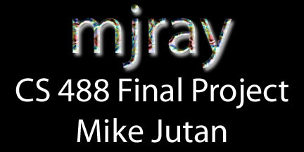
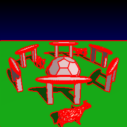
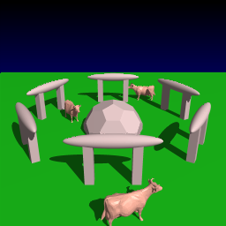
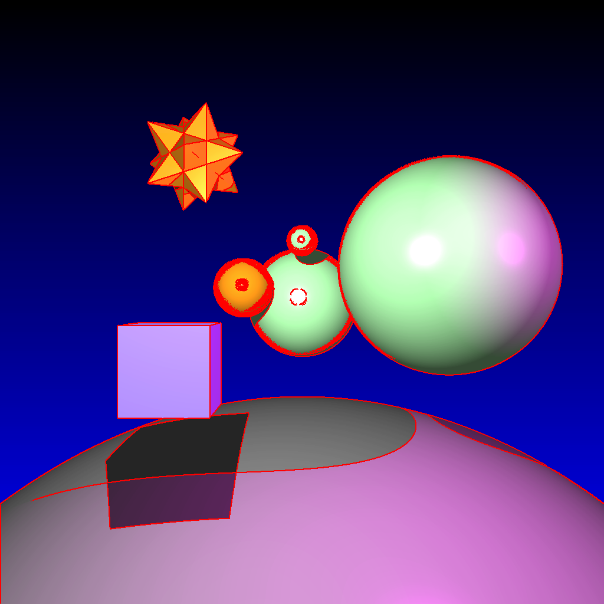
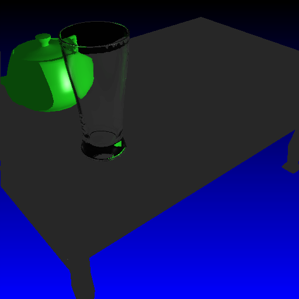
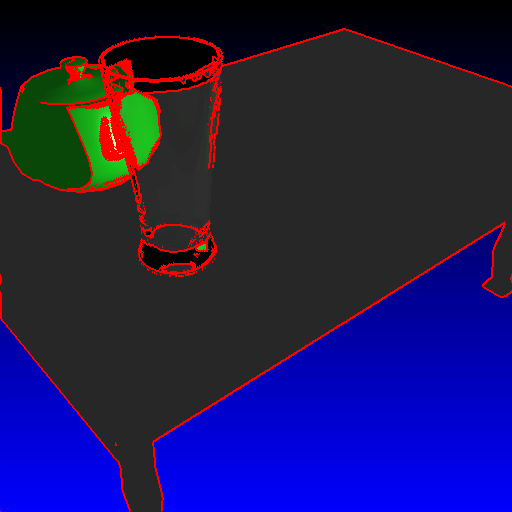
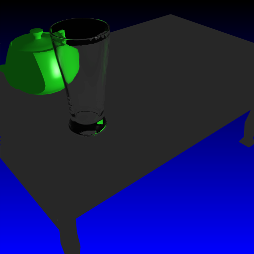

Objective 3:
Adaptive Anti-Aliasing
Rather than just implementing straight Supersampling, I wrote an Adaptive method which runs in multiple passes. The raytracer first raytraces the left and right half of the image with 1 ray per pixel. The processes then join and the image is combined. Then I determine if pixels in the image differ from their neighbouring pixels by more than a tolerance amount. If they do, these are marked as being "bad pixels" and are supersampled with a high amount of rays (5x5 = 25 rays or 6x6 = 36 rays). By only supersampling the pixels that actually need it, I save hours and hours of Raytracing time.
Cows image, not anti-aliased  Cows image "marked" for Anti-aliasing - 15% of the image  Macho Cows image with Adaptive Anti-Aliasing
 Non-heir "bad pixels" marked - only 6% of image!  Glass scene, no anti-aliasing
 Glass scene with marking
 Glass scene with Anti-aliasing |
Written by: Mike Jutan
CS 488 - Computer Graphics
University of Waterloo